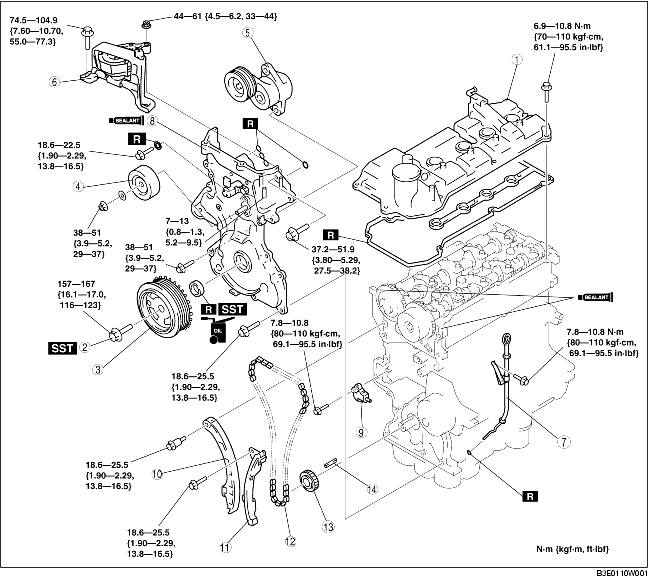

1. Remove the battery cover.
2. Disconnect the negative battery cable.
3. Drain the engine coolant. (See ENGINE COOLANT REPLACEMENT.)
4. Remove the front wheel and tire (RH). (See GENERAL PROCEDURES (SUSPENSION).)
5. Remove the under cover and splash shield (RH).
6. Remove the air cleaner component. (European (L.H.D.) specs.) (See INTAKE-AIR SYSTEM REMOVAL/INSTALLATION [ZJ, Z6].)
7. Remove the air cleaner case and position the air cleaner cover out of the way with the PCM connector still connected. (U.K. specs.) (See INTAKE-AIR SYSTEM REMOVAL/INSTALLATION [ZJ, Z6].)
8. Remove the following parts:
9. Disconnect the following parts:
10. Remove in the order indicated in the table.
11. Install in the reverse order of removal.
12. Start the engine.
13. Inspect the following and adjust them if necessary.
14. Perform a road test and verify that there is no abnormal vibration or noise.

|
1
|
Cylinder head cover
|
|
2
|
Crankshaft pulley installation bolt
|
|
3
|
Crankshaft pulley
|
|
4
|
Idler pulley
|
|
5
|
Drive belt auto tensioner
|
|
6
|
No.3 engine mount
|
|
7
|
Oil level gauge pipe
|
|
8
|
Engine front cover
|
|
9
|
Chain tensioner (See Chain Tensioner Removal Note.)
|
|
10
|
Chain tensioner arm
|
|
11
|
Chain guide
|
|
12
|
Timing chain (See Timing Chain Removal Note.) (See Timing Chain Installation Note.)
|
|
13
|
Crankshaft sprocket
|
|
14
|
Key
|
1. Fix the crankshaft pulley using the SSTs.
1. Secure the engine using an engine jack and attachment.
1. Remove the front oil seal using a flathead screwdriver.
1. Push down the link plate of the timing chain tensioner using a thin flathead screwdriver (precision screwdriver), and release the plunger lock.
2. Push back the plunger slowly in the direction shown in the figure with the link plate still pushed down.
3. Release the link plate with the plunger still pressed down.
4. Release the pressure slightly from the plunger, and move the plunger back and forth 2-3 mm {0.08-0.11 in).
5. Insert an approx. 1.5 mm {0.06 in) thick wire or paper clip where the link plate hole and the tensioner body hole overlap to fix the link plate and lock the plunger.
1. Rotate the crankshaft clockwise and align the key groove of the crankshaft sprocket with the timing mark, and then position the No.1 cylinder to TDC.
2. Align the timing marks on the camshaft sprockets so that they form a straight line in alignment with the upper horizontal surface of the cylinder head.
3. Remove the timing chain.
1. Align the key groove of the crank sprocket to the timing mark, and then position the No.1 cylinder to TDC.
2. Align the timing marks on the camshaft sprockets so that they form a straight line in alignment with the upper horizontal surface of the cylinder head.
3. Install the timing chain.
4. After installing the chain adjuster, remove the wire or the paper clip installed to the chain tensioner, and apply tension to the timing chain. (Remove the installed stopper when installing the new chain tensioner.)
5. Verify that there is no slack on the timing chain, and then verify that each sprocket is positioned in the proper place again.
6. Rotate the crankshaft clockwise twice, and then inspect the valve timing.
1. Apply the silicon sealant to the engine front cover as shown in the figure.
2. Tighten the engine front cover installation bolts in the order shown in the figure.
3. Apply clean engine oil to the new front oil seal.
4. Insert the front oil seal into the engine front cover by hand.
5. Tap in the front oil seal using the SST and a hammer.
1. Tighten the No.3 engine mount installation stud bolts.
2. Install the No.3 engine mount and temporarily tighten the installation bolts and nuts.
3. Tighten the installation bolts in the order shown in the figure.
1. Fix the crankshaft pulley using the SSTs.
2. Tighten the crankshaft pulley installation bolt.
1. Apply silicon sealant as shown in the figure.
2. Tighten the cylinder head cover installation bolts in the order shown in the figure.